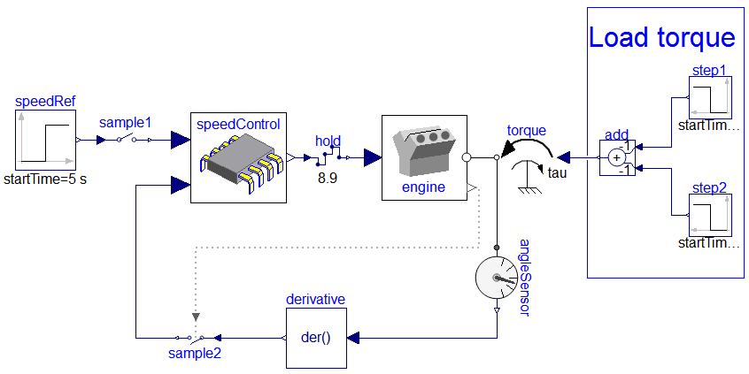

Examples of complete systems
This package contains complete system models of simplified realistic applications.
Extends from Modelica.Icons.ExamplesPackage (Icon for packages containing runnable examples).
| Name | Description |
|---|---|
| Simple example of a mixing unit where a (discretized) nonlinear inverse plant model is used as feedforward controller | |
| Closed-loop throttle control synchronized to the crankshaft angle of an internal combustion engine | |
| Utilities for the examples |
 Modelica.Clocked.Examples.Systems.ControlledMixingUnit
Modelica.Clocked.Examples.Systems.ControlledMixingUnitSimple example of a mixing unit where a (discretized) nonlinear inverse plant model is used as feedforward controller
Since a long time, Modelica is used to model advanced nonlinear control systems. Especially, Modelica allows a semi-automatic treatment of inverse nonlinear plant models. In the fundamental article (Looye et.al. 2005, see Literature or Download) this approach is described and several controller structures are presented to utilize an inverse plant model in the controller. This approach is attractive because it results in a systematic procedure to design a controller for the whole operating range of a plant. This is in contrast to standard controller design techniques that usually design a linear controller for a plant model that is linearized at a specific operating point. Therefore the operating range of such controllers is inherently limited.
Up to Modelica 3.2, controllers with inverse plant models can only be defined as continuous-time systems. Via the export mechanism of a Modelica tool they could be exported with solvers embedded in the code and then used as sampled data system in other environments. However, it is not possible to re-import the sampled data system to Modelica.
The synchronous features of Modelica 3.3 together with the Modelica.Clocked library offer now completely new possibilities, so that the inverse model can be designed and evaluated as sampled data system within Modelica and a Modelica simulation environment. This approach is shown at hand of a simple example using a nonlinear plant model of a mixing unit (Föllinger O. (1998): Nichtlineare Regelungen I, Oldenbourg Verlag, 8. Auflage, page 279) and utilizing this plant model as nonlinear feed-forward controller according to (Looye et.al. 2005):
A substance A is flowing continuously into a mixing reactor. Due to a catalyst, the substance reacts and splits into several base substances that are continuously removed. The reaction generates energy and therefore the reactor is cooled with a cooling medium. The cooling temperature T_c(t) in [K] is the primary actuation signal. Substance A is described by its concentration c(t) in [mol/l] and its temperature T(t) in [K]. The concentration c(t) is the signal to be primarily controlled and the temperature T(t) is the signal that is measured. These equations are collected together in input/output block Utilities.ComponentsMixingUnit.MixingUnit.

The design of the control system proceeds now in the following steps:
Inverting a model usually means that equations need to be symbolically differentiated and that higher derivatives of the inputs are needed (that are usually not available). One approach is to filter the inputs, so that a Modelica tool can determine the derivatives of the filtered input from the filter states. The minimum needed filter order is determined by first inverting the continuous-time plant model from the variable to be primarily controlled (here: "c") to the actuator input (here: "T_c"). This is performed with the help of block Modelica.Blocks.Math.InverseBlockConstraints that allows connecting an external input to an output in the pre-filter design block Utilities.ComponentsMixingUnit.FilterOrder:

Translating this model will generate the continuous-time inverse plant model. However, a Modelica tool will give an error message that it has to differentiate the model, but this requires the second derivative of the external input c_ref and this derivative is not available. The conclusion is that a low pass filter of at least second order has to be connected between c_ref and c, for example Modelica.Blocks.Continuous.Filter. Only filter types should be used that do not have "vibrations" in the time domain for a step input. Therefore, parameter analogFilter of the component should be selected as CriticalDamping (= only real poles), or Bessel (= nearly no vibrations, but steeper frequency response as CriticalDamping). The cut-off frequency f_cut is manually selected by simulations of the closed loop system. In the example, a CriticalDamping filter of third order (the third order is selected to get smoother signals) and a cut-off frequency of 1/300 Hz is used.
The controller for the mixing unit is shown in the diagram layer of block at hand, as well as in the following figure:

It consists of the filter discussed above. The input to the filter is the reference concentration which is filtered by the low pass filter. The output of the filter is used as input to the concentration c in the inverse plant model. This model computes the desired cooling temperature T_c (which is used as desired cooling temperature at the output of the controller) and the desired temperature T (which is used as desired value for the feedback controller). This part of the control system is the "feed-forward" part that computes the desired actuator signal. As feedback controller a simple P controller with one gain is used.
This controller could be defined as continuous-time system in previous Modelica versions. However, with Modelica 3.3 it is now also possible to define the controller as sampled data system. For this, the two inputs are sampled (sample1 and sample2) and the actuator output is hold (hold1). The controller partition is then associated with a periodic clock (via sample2) that has a sample period of 1 s and a solverMethod = "ExplicitEuler". Since the controller partition is a continuous-time system, it is discretized and solved with an explicit Euler method at every clock tick (by integrating from the previous to the actual time instant of the clock).
The controller works perfectly if the same parameters for the plant and the inverse plant model are used (follows perfectly the filtered reference concentration). Changing all parameters of the inverse plant model by 50 % (with exception of parameter e since the plant is very sensitive to it) still results in a reasonable control behavior as shown in the next two figures:

The green curve in the upper window is the (clocked) output of the filter, that is, it is the desired concentration. The red curve in the upper window is the concentration of model mixingUnit, which is the concentration in the plant. Obviously, the concentration follows reasonably well the desired one. By using a more involved feedback controller, the control error could be substantially reduced.
Extends from Modelica.Icons.Example (Icon for runnable examples).
| Name | Description |
|---|---|
| freq | Critical frequency of filter [Hz] |
| c0 | Nominal concentration [mol/l] |
| T0 | Nominal temperature [K] |
| a1_inv | Process parameter of inverse plant model (see references in help) |
| a21_inv | Process parameter of inverse plant model (see references in help) |
| a22_inv | Process parameter of inverse plant model (see references in help) |
| b_inv | Process parameter of inverse plant model (see references in help) |
| k0_inv | Process parameter of inverse plant model (see references in help) |
| eps | Process parameter (see references in help) |
| x10 | Relative offset between nominal concentration and initial concentration |
| x20 | Relative offset between nominal temperature and initial temperature |
| u0 | Relative offset between initial cooling temperature and nominal temperature |
| pro | Deviations of plant to inverse plant parameters |
Modelica.Clocked.Examples.Systems.EngineThrottleControlClosed-loop throttle control synchronized to the crankshaft angle of an internal combustion engine
This example shows how to model a non-periodic synchronous sampled data systems
with the Modelica.Clocked library. This is demonstrated at hand
of a closed-loop throttle control synchronized to the crankshaft angle of an
internal combustion engine. This system has the following properties:
The complete system is shown in the figure below (diagram-layer):

Block speedControl is the discrete control system. The boundaries
of this controller are defined by sample1, sample2 and
hold. The sampling is done in terms of sensors within the engine
which observe its crankshaft angle; every 180° rotation of the crankshaft, the engine
internally synchronizes is throttles. The respective synchronization points are provided
as clocked outputs that in turn are used to trigger the external controller. The speed
controller therefore is automatically executed every half-rotation of the engine's
crankshaft in sync with the engine's internal throttle-cycle. The following diagram
illustrates the engine's respective internal setup:
The crankshaftPositionEvent-clock is the event-clock synchronizing the
engine's internal throttle-cycle and external control. It produces a clock tick for
every half-rotation and is implemented as
RotationalClock.
The following diagram illustrates the logic of such a rotational clock:

It accounts the angular of the last time a rotation has been
recognized (angular_offset). Given
angular_offset, the event-condition for rotations is:
abs(angle - angular_offset) >= abs(trigger_interval)
In our case, angle is the position of the crankshaft of the engine and
trigger_interval is 180°. In the end,
crankshaftPositionEvent samples it's own input angle to account
an offset used to decide when to tick; the clock's event condition depends on
the state present when the condition changed last time from being non-satisfied
to being satisfied, i.e., the state when the clock last ticked.
This example model is based on the following references:
sldemo_enginewc.mdl:EngineThrottleControl example uses the same parameter values as the sldemo_enginewc.mdl demo model which is shipped with the Simulink® software developed by The MathWorks, Inc.
Hence, the simulation results of these models can be compared conveniently.Extends from Modelica.Icons.Example (Icon for runnable examples).
Automatically generated Tue Feb 24 16:59:02 2026.